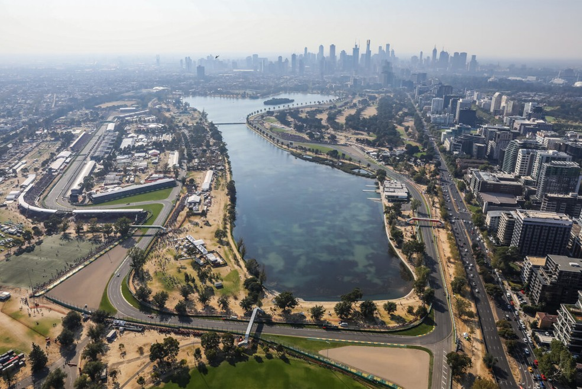
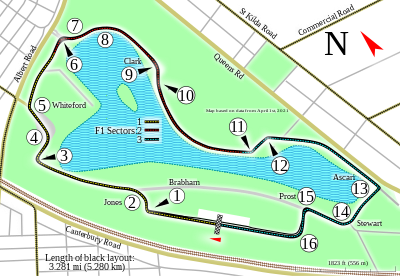

NAVEGUE
Home
Pilotos
Calendário/Tabela
Grand Prix
Construtoras
Últimas Notícias
GP da Austrália
SOBRE
A pista da Austrália é um circuito de corrida localizado em Melbourne, na Austrália. É a sede do Grande Prêmio da Austrália de Fórmula 1 desde 1996 e é considerada uma das corridas mais populares do calendário da Fórmula 1. Com 5,303 km de extensão, a pista tem 16 curvas e é conhecida por ser desafiadora para os pilotos, com curvas rápidas e estreitas. A primeira corrida da temporada de Fórmula 1 geralmente acontece na pista da Austrália, marcando o início da temporada.
Circuitos Utilizados
Melbourne

INFORMAÇÕES DA CORRIDA

Localização
Melbourne, Austrália
Voltas
58
Percurso
5.278 km
Total
306.124 km
Curvas
14
Pole
Max Verstappen
Anos Disputados
86
Última Disputa
2023
Maior vencedor
Michael Schumacher
Última Corrida - Pódio
Max Verstappen